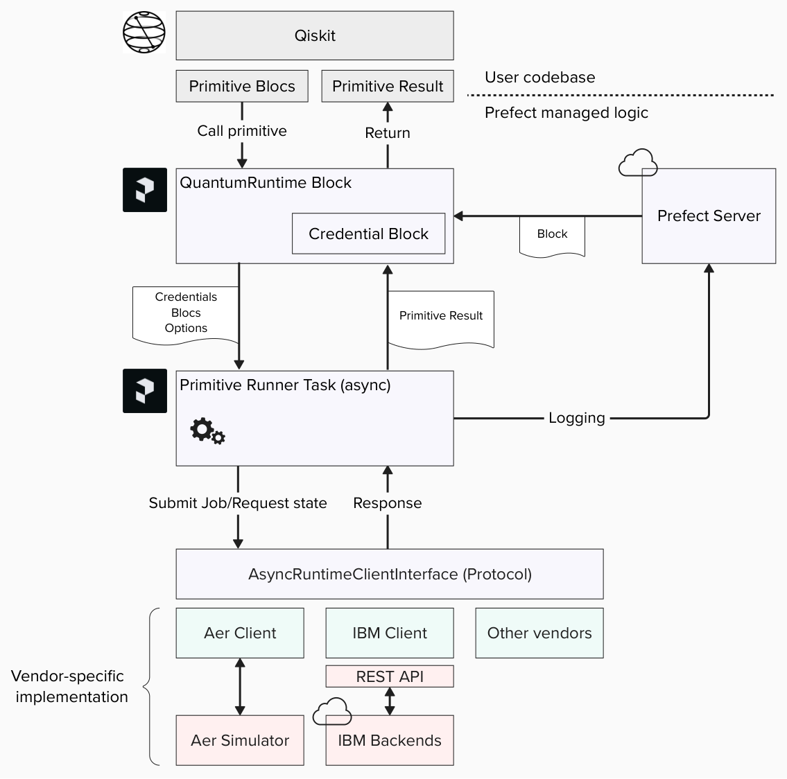

Prefect Qiskit
The prefect-qiskit integration makes it easy to write quantum computing workflow.
You can use the Prefect version of Qiskit Primitives, which leverage the capabilities of workflow management software for robust execution.
See Tutorials for full example.
Qiskit Primitives
Quantum Primitives are abstractions of quantum computation. This model takes a Primitive Unified Bloc (PUB) as input and returns results depending on the input PUB type. Typically, quantum programs are represented by the Quantum Circuit model.
For example, the Qiskit implementation of this model may look like this:
from qiskit import QuantumCircuit
from qiskit.primitives import BackendSamplerV2
from qiskit.providers.fake_provider import GenericBackendV2
# Define backend
backend = GenericBackendV2(2)
# Create quantum circuit
circ = QuantumCircuit(2)
circ.h(0)
circ.cx(0, 1)
circ.measure_all()
# Define Primitive
primitive = BackendSamplerV2(backend=backend)
pubs = [(circuit, )]
# Execute
job = primitive.run(pubs)
result = job.result()
Prefect for Quantum Computing
As quantum computing technology advances, large-scale experiments are becoming more common. These experiments often involve repeated job execution on quantum processors, with readout data being processed remotely at scale. Given the high cost of quantum computation, it's prudent to implement robust execution practices at the application level, particularly for large experiments.
To add robustness and scalability to your quantum computing workflow, integrating a cloud-native workflow orchestrator, such as Prefect, is a good option. Prefect offers a framework for third-party integration, which include, for example, AWS, Azure, and GCP.
With Prefect, you can easily turn your existing codebase into a quantum computing workflow. For example, a common programming pattern in quantum workflow, called Qiskit Pattern, may look as below with the Prefect syntax.
from prefect import task, flow
...
@task
def mapping_problem(**params):
...
@task
def optimize(circuit, target):
...
@task
def post_processing(result):
...
@flow
def experiment(**params):
...
# Qiskit Pattern: Mapping
circuit = mapping_problem(**params)
# Qiskit Pattern: Optimize
isa = optimize(circuit, target)
# Qiskit Pattern: Execute
result = runtime.sampler([isa])
# Qiskit Pattern: Post-Processing
data = post_processing(result)
Prefect Qiskit Integration
This plugin provides integration for quantum computation through the Primitive model with Qiskit implementation. With this plugin, the Primitive execution in the example code may be simplified as below:
from prefect_qiskit import QuantumRuntime
runtime = QuantumRuntime.load("my-runtime")
...
result = runtime.sampler(pubs)
Since our runtime is an asynchronous implementation, you can efficiently sample multiple PUBs in parallel:
import asyncio
results = await asyncio.gather(*[runtime.sampler([pub]) for pub in pubs])
See Asyncio task guide for Python syntax.
As you may notice, the job object is encapsulated and the runtime directly returns the result. Primitive execution is now implemented as a Prefect workflow to provide a checkpoint mechanism and repeat-until-success to mitigate execution failures.
You can also pre- and post-process data with other third-party cloud integrations.
Software Architecture
This diagram shows the software design of this plugin.

Users can use Qiskit to prepare PUBs. If they already have a codebase written in Qiskit, they can easily turn the experiment into a Prefect workflow.
The QuantumRuntime Block contains a vendor-specific credential Block,
and it spawns a client that implements the AsyncRuntimeClientInterface protocol against vendor-specific API.
The run_primitive function (Primitive Runner Task), manages the execution on this abstraction layer.
Thanks to this abstraction, we can use a common Prefect workflow on different vendor APIs.
When the runtime Block invokes a primitive, it calls the Prefect task with the credentials Block, PUBs, and vendor specific options. This task implements the checkpoint and repeat-until-success mechanism.
Supported Vendors
We support following quantum computing vendors.
Qiskit Aer
Qiskit Aer is a high performance simulator for quantum circuits.
from prefect_qiskit.vendors.qiskit_aer import QiskitAerCredentials
credential = QiskitAerCredentials()
IBM Quantum
IBM Quantum provides quantum processors with superconducting qubit architecture.
from prefect_qiskit.vendors.ibm_quantum import IBMQuantumCredentials
credential = IBMQuantumCredentials(api_key="...", crn="crn:...")
Resources
For assistance using Qiskit, consult the Qiskit Documentation and, in particular, the Primitive Documentation.
See the API specification of each quantum computer vendor for the data schema of primitive options. For IBM Quantum, checkout the REST API specification.